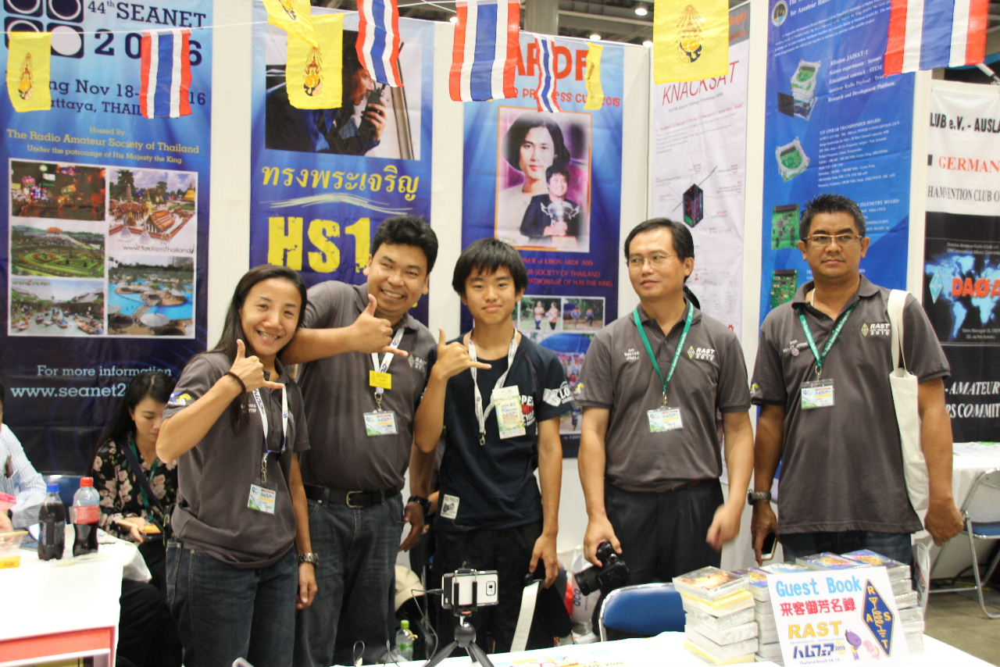
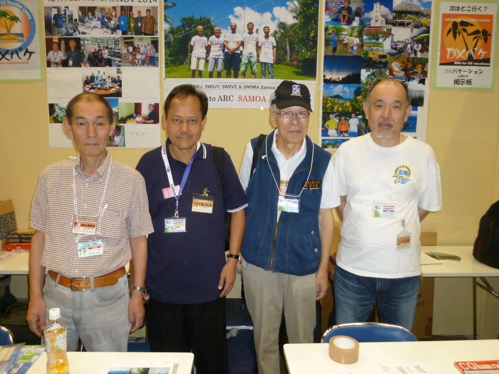
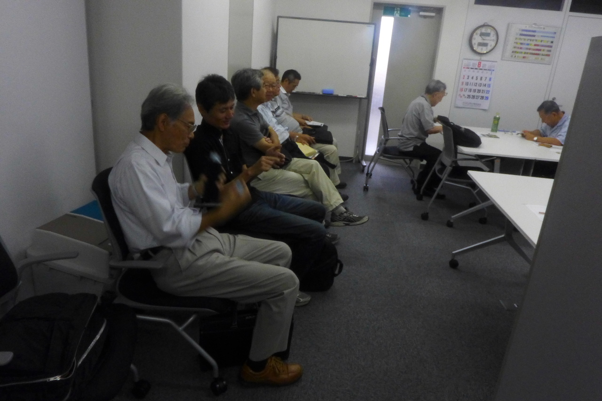
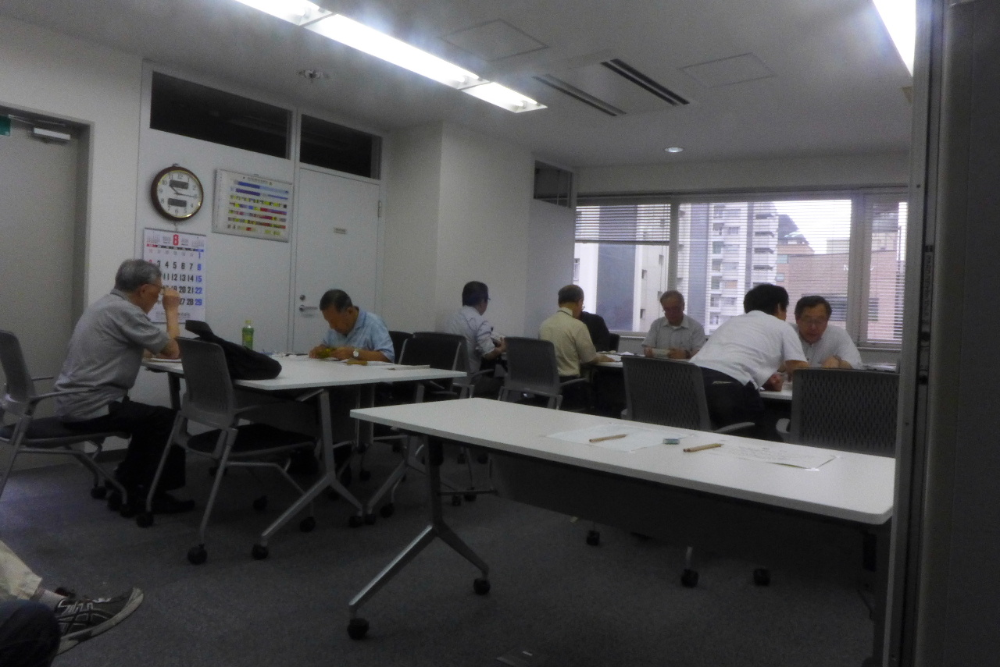

Flash ! DX


|
|
|
|
|
|
|
[Back Issues Aug.2015]
TIME:UTC(JST-09:00)
Report from JA1RJU(PM95sq)
31.Aug.2015(00:00a)
Report from JA1RJU(PM95sq)
30.Aug.2015(15:00b)
Report from JA1RJU(PM95sq)
29.Aug.2015(15:00b)
Report from JA1RJU(PM95sq)
28.Aug.2015(15:00b)
Report from JA1RJU(PM95sq)
27.Aug.2015(15:00b)
Report from JA1RJU(PM95sq)
26.Aug.2015(15:00b)
Report from JA1RJU(PM95sq)
25.Aug.2015(15:00c)
9W6EZ 10:17 50.276-0.172 WSJT JT65a CQ -13dB
9W6EZ 10:24 50.276+0.066 WSJT JT65a CQ -20dB
Report from JA1RJU(PM95sq)
24.Aug.2015(15:00c)


Report from JA1RJU(PM95sq) 22-23.Aug.2015(15:00b)
|
◎ JARL創立90周年記念「ハムフェア・2015」開催（会場：東京ビックサイト西2ホール） |
Report from JA1RJU(PM95sq) 21.Aug.2015(00:00a) Report from JA1RJU(PM95sq) 20.Aug.2015(15:00c)
|
◎今週末の8/22日（土）から23日（日）は「2015・ハムフェア」が東京・有明のビックサイトで開催されます。
例年の様に、今年もハムフェア会場でDXCCの申請を受付ます。 ハムフェア会期中の8月22日、23日の2日間は、会場の「DXCCデスク」で受け付けます。時間は両日とも、10：00-12：00、13：00-15：00。 これに先立ち、今年もハムフェア会期前の8/20（木）、21日（金）の両日、東京・大塚のJARL事務局でも申請を受付る。 初日の20日は、雨模様の中、受付開始30分後には15局が”QSL持参”で訪れ、”QSLカードチェック”が行われました。
  JARL事務局で行われたDXCCの”QSLカードチェック” |
Report from JA1RJU(PM95sq)
19.Aug.2015(15:00b)
Report from JA1RJU(PM95sq)
18.Aug.2015(15:00b)
Report from JA1RJU(PM95sq)
17.Aug.2015(15:00b)
Report from JA1RJU(PM95sq)
16.Aug.2015(15:00d)
DU1EV/B 01:50- 50.008 CW Beacon (Es open to JA4-JS6)
BV1EL 02:30 50.115 CW CQ
VR2XAN 02:33 50.116 CW CQ
Report from JA1RJU(PM95sq)
15.Aug.2015(15:00b)
Report from JA1RJU(PM95sq)
14.Aug.2015(15:00b)
Report from JA1RJU(PM95sq)
13.Aug.2015(15:00b)
6L0NJ/B 02:13- 50.051 CW Beacon
Report from JA1RJU(PM95sq)
12.Aug.2015(15:00c)
HL/VK6JJJ 08:44 50.276-0.460 WSJT JT65a -09dB
Report from JA1RJU(PM95sq)
11.Aug.2015(15:00b)
Report from JA1RJU(PM95sq)
10.Aug.2015(15:00d)
NH0J 01:17 50.276-0.300 WSJT JT65a -06dB TINIAN Is QSO with JA2
6L0NJ/B 04:40- 50.051 CW Beacon
VK8VF/b 14:28- 50.310 CW Beacon
Report from JA1RJU(PM95sq)
09.Aug.2015(15:00c)
HL/VK6JJJ 02:19 50.276-0.032 WSJT JT65a CQ -12dB
HL/VK6JJJ 02:31 50.276-0.035 WSJT JT65a CQ -05dB
HL/VK6JJJ 05:26 50.276-0.277 WSJT JT65a -16dB
Report from JA1RJU(PM95sq)
08.Aug.2015(15:00d)
BD0AAI 03:12 50.276-0.382 WSJT JT65a
BG3ATI 03:50 50.276+0.264 WSJT JT65a -07dB
HL/VK6JJJ 09:34 50.276-0.038 WSJT JT65a CQ -06dB
HL/VK6JJJ 09:54 50.276+0.237 WSJT JT65a CQ -08dB
HL/VK6JJJ 10:36 50.276+0.035 WSJT JT65a CQ -08dB
Report from JA1RJU(PM95sq)
07.Aug.2015(15:00b)
Report from JA1RJU(PM95sq)
06.Aug.2015(15:00b)
Report from JA1RJU(PM95sq)
05.Aug.2015(15:00f)
BH4QFI 02:54 50.110.6 CW CQ CQ
BV3TO 02:55 50.110 CW
BH4QFI 03:05 50.110.6 CW @ RST599
BM6GJL 03:22 50.110 SSB
BX2AXK 03:29 50.110 SSB CQ
6L0NJ/B 03:44- 50.051 CW Beacon
BM6GJL 03:54 50.120 SSB CQ
BX2AEE 03:56 50.120 SSB
HL/VK6JJJ 08:30 50.276-0.075 WSJT JT65a CQ -04dB
HL/VK6JJJ 08:36 50.276 WSJT @ JT65a QSO -05dB/-12dB (15W)
HL/VK6JJJ 10:30 50.276-0.40 WSJT JT65a CQ -09dB
HL/VK6JJJ 10:39 50.276-0.60 WSJT JT65a -16dB
VK8VF/b 11:58- 50.310 CW Beacon
Report from JA1RJU(PM95sq)
04.Aug.2015(15:00d)
V73SIX/B 08:35- 50.0116 CW Beacon RST599 QSB
DU1EV/B 09:20- 50.008 CW Beacon
V73SIX/B 09:20- 50.0116 CW Beacon still good!
Report from JA1RJU(PM95sq)
03.Aug.2015(15:00b)
KG6JDX 06:07 50.110 SSB
Report from JA1RJU(PM95sq)
02.Aug.2015(15:00c)
JD1YAA 05:46 50.157 SSB OP Hosono (Minami Torishima)
Report from JA1RJU(PM95sq)
01.Aug.2015(15:00b)